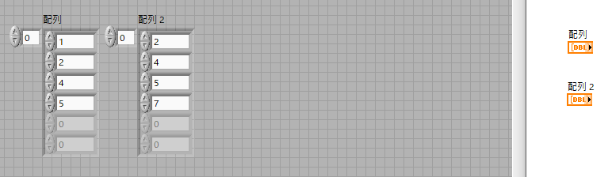
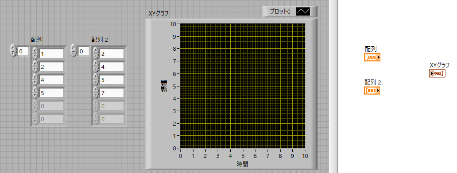
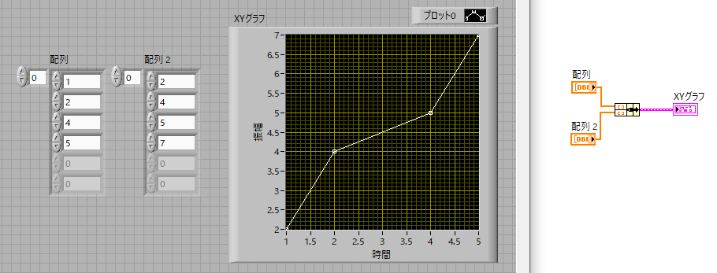

XYグラフ-01
二つの変数がある場合にはXYグラフを使います．エクセルでは散布図と呼んでいますね．
です．
まずは適当な配列を二つ作成しましょう．左にフロントパネル，右にブロックダイヤグラムを表示します．

次に，XYグラフ，を作成します．一番上の右ですね．

XYグラフのアイコンには入力端子が一つしかありません．ですので，X,Yのデータをまとめる（バンドルする）必要があります．
複数のデータを一つのグラフに描くときに必要なアイコンは，波形グラフでも出てきた，
クラスタ，クラス，バリアント → バンドル

です．
バンドルアイコンを設置して，XYグラフに接続し，実行してみましょう．

このように横軸の値が不等間隔な散布図ができあがりました．
複数のデータを一つのグラフに描くとき場合を次ページに示します．